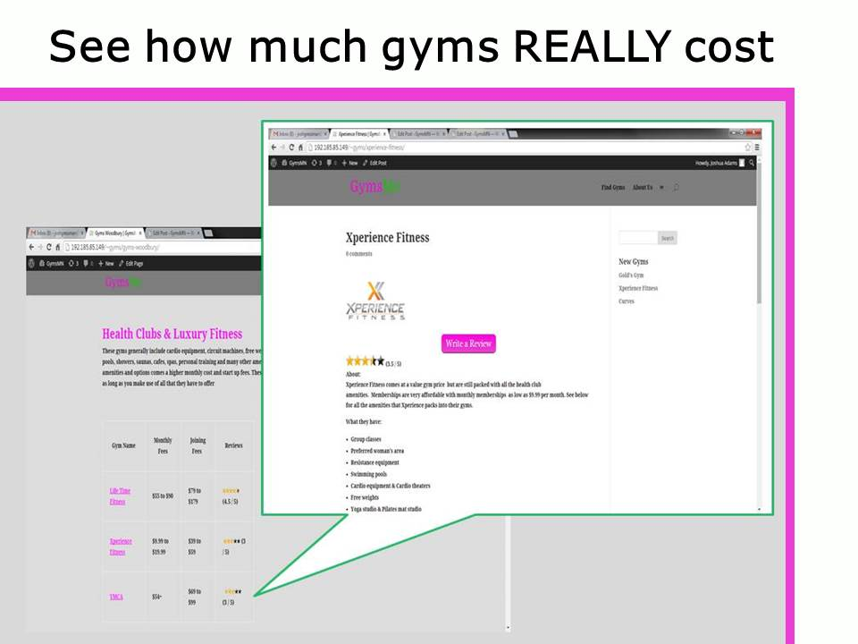
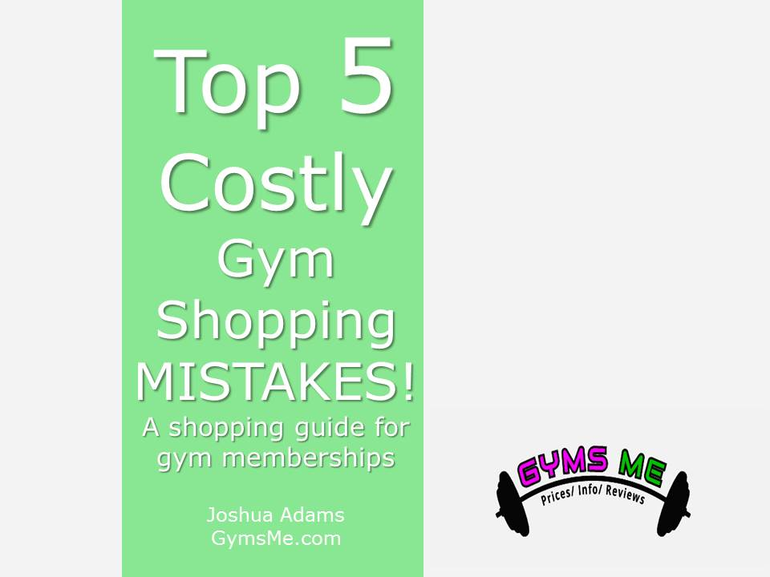
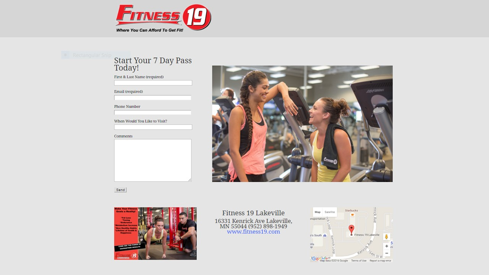

Professional Profile:
Distinguished leader in developing and implementing operating systems that generate profit through accountability of team members and a dedication to customer service. Avidly pursues entrepreneurial endeavors including; creating and launching a service website as well as a successful personal training business.
Professional Experience:
Fitness 19
- Minnesota & South Dakota Market
- January 2013 to May 2016
- Position: Regional Manager
- Oversee operations in 5 locations within the Minnesota & South Dakota Market
- Marketing design and implementation including web pages, Facebook, and print advertising
- Create training systems for management teams and support staff
- Auditing of facility operations, cleanliness, and service standards
- Create solutions to operation matters
Anytime Fitness
- Anytime Fitness Corporate - Corporate Club Division
- August 2012 to December 2012
- Position: General Manager
- Managed customer service opportunities
- Maintained up keep of the facility & equipment
- Membership sales: prospecting and marketing
Fitness 19
| Fitness 19 Lakeville MN | December 2005 to October 2008 | Position: Fitness Manager & Club Coordinator |
| Fitness 19 Eagan MN | October 2008 to October 2009 | Position: Operator/General Manager |
| Fitness 19 Maplewood MN | October 2009 to September 2012 | Position: Operator/General Manager |
- Designed and implemented sales training systems
- Advertising & Marketing campaign design and ROI statistics
- Managed book keeping and finances with QuickBooks, Aphelion/CheckFree systems, and Excel
- Successfully took over 2 facilities and stabilized their financial statuses
LifeTime Fitness
- Eagan MN
- October 2004 to August 2005
- Position: Personal Trainer
- Performed health assessments
- Sales of services
- Designed individualized fitness programs
Technical Skills:
- HTML & CSS
- WordPress
- Microsoft Office 365
Education:
- Rosemount High School,
- Rosemount MN
- Diploma
Certifications:
- American Council on Exercise CPT
- ACE Certified Fitness Coach
- National Academy of Sports Medicine CPT
- CPR Certified
Recent Projects
- 
Created Gymsme.com as a one stop shop tool for gyms, health clubs, and local fitness studios. The vision of gymsme.com was to be the "Expedia.com of Fitness." This project was created with WordPress and took upwards of 200 hours. GymsMe provides health club prices, facility and contract information, as well as user review capabilities. The Gymsme.com project was my first website project and it's what started my passion for web development. I loved finding solutions to various coding issues and taking a concept in my head and working it into a functioning webpage.
- 
I created the Top 5 Costly Gym Shopping Mistakes eBook for two reasons. First, because the process of fitness service shopping for consumers is stressful and time consuming. It is filled with high pressure sales and vague information. Secondly, I created the eBook as a tool to obtain subscribers and build my email list. The eBook gives valuable information on how to save money, and avoid some of the pitfalls that can happen when joining a gym.
- 
Created and managed landing pages specific to monthly marketing campaigns for 5 Fitness 19 locations. The landing pages are used for PPC advertising through Google Adwords and Facebook. The pages ran off WordPress and used various themes and plug-ins. Some months 20+ pages were required to be created in a 24-hour period. Managing these pages allowed me to take what I learned creating Gymsme.com and use it to create landing pages that produced new memberships and an increase in revenue.